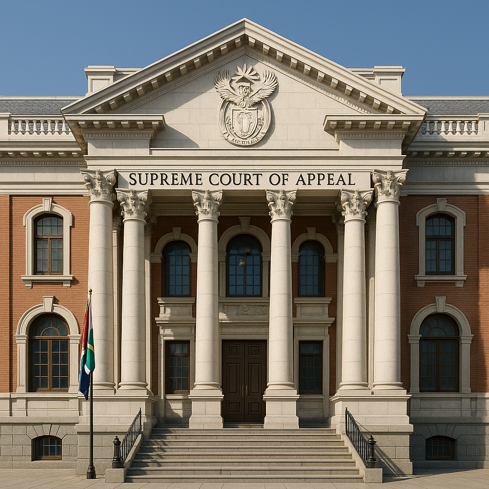
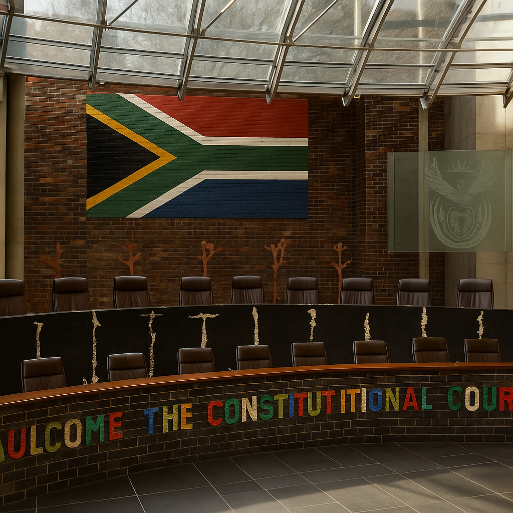
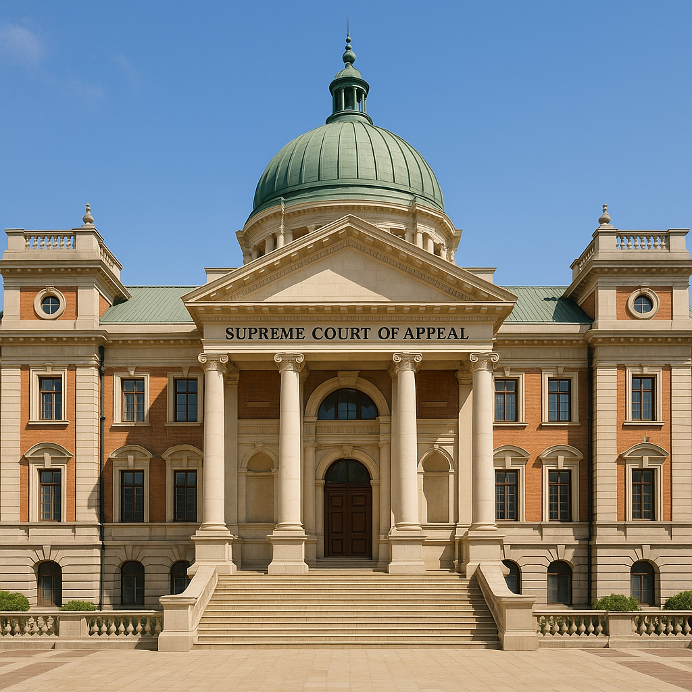

Making Constitutional Jurisprudence Accessible, Structured, and Searchable
We are committed to making the judgments of the Constitutional Court of South Africa intelligible, structured, and searchable through the BB FIRAC method.
This platform exists to bridge the gap between judicial reasoning and legal accessibility by offering standardised summaries of all reported Constitutional Court decisions since the Court's inception.
Whether you're a lawyer preparing submissions, a judge seeking comparative precedent, a student revising for exams, or a researcher tracing doctrinal shifts, this archive is designed with you in mind.
Systematic Case Notes Built on the BB FIRAC Method
Unlike traditional case digests or unstructured summaries, each case note on this platform is crafted using the BB FIRAC method.
This methodology ensures:
- Uniform structure across all case notes (Facts, Issues, Rules, Application, Conclusion)
- Direct referencing of original paragraph numbers from the judgment
- Majority-opinion focus while acknowledging separate concurring or dissenting views
- OSCOLA-style citation for academic and professional accuracy
This level of rigour ensures every note is traceable, comprehensive, and citation-ready for your legal writing, teaching, or litigation needs.


AI-Assisted Drafting, Human-Led Legal Review
All case notes are initially drafted using AI-driven summarization tools powered by the BB FIRAC methodology.
Each draft is then reviewed, edited, and finalized by legal professionals with expertise in South African constitutional law.
This hybrid process guarantees speed without compromising on legal accuracy or analytical integrity. We continuously audit the collection to improve clarity, depth, and alignment with current legal standards.
A Resource for Legal Professionals, Academics, and Constitutional Scholars
Our platform serves a wide legal audience with varying needs:
- Lawyers and Advocates: Use the case notes for argument preparation, quick referencing, or briefings
- Judges and Clerks: Access standardised summaries for precedent review
- Law Students: Study past cases efficiently through structured case notes
- Academics and Researchers: Track the development of constitutional doctrine and judicial trends across decades
By focusing exclusively on the Constitutional Court, we ensure every case note speaks to the highest level of constitutional adjudication in South Africa.
